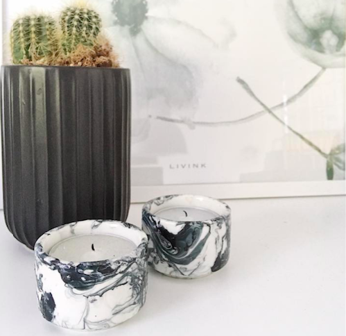
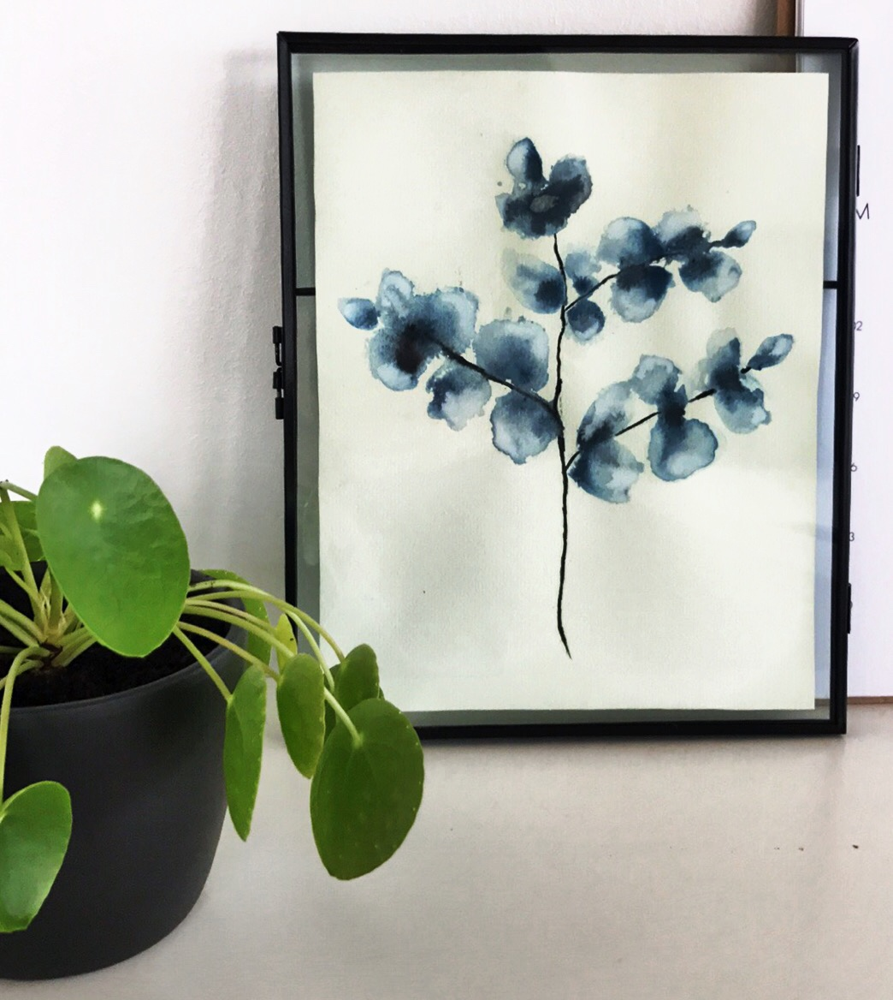

Skær ned i budgettet med DIY
Du er lige flyttet hjemmefra og skal fylde din lejlighed med møbler og nips. Dette, kommer nok ikke bag på nogen, er en dyr affære og de fleste vil nok sætte pris på at kunne skære væsentligt ned på denne omkostning.
DIY: marmorlignende lysestager
Denne DIY kræver ikke andet end neglelak og vand at lave.
Det er vigtigt, at du arbejder hurtigt med neglelakken, da den tørrer hurtigt.
Det skal du bruge:
- Hvide fyrfadsstager
- Et kar med lunken vand
- Neglelak i de ønskede farver - her er der brugt sort og grå
- Tandstikker
Fremgangsmåde:
- Hæld neglelakken i karet med det lunkne vand.
- Tag hurtigt tandstikken og rør rundt i neglelakken, så det danner et mønster.
- Dyp dine fyrfadsstager i karet og drej rundt, så neglelakken sætter sig fast.
Så nemt og enkelt kan det gøres. Dine fyrfadsstager er nu klar til at skabe hygge næste gang, du får gæster på besøg.
Ønsker du at finde mere inspiration til DIY's, kan jeg anbefale at tjekke Boligmagasinets hjemmeside ud. Der er både små og store projekter, og jeg er sikker på, du kan finde noget, du får lyst til at give dig i kast med.
Søstrene Grene har også nogle fine gør-det-selv projekter. Her finder du mange pynteting og sæsonbetonede sager, du kan lave selv, og som ikke kræver alt for meget overskud at kaste sig over.
En anden DIY der er nem at kaste sig ud i, og som kan bruges både som en fin gave og som en hurtig måde at gøre hjemmet lidt mere festligt, er vandfarve.
Materialerne kan tilegnes til små penge i Søstrene Grene, og det eneste du behøver, er akvarelpapir og vandfarver samt evt. nogle pensler, hvis du ikke på forhånd har dette.
Pinterest er et rigtigt godt bud på, hvor du kan hente inspiration til billeder, og så er det ellers bare at kaste sig ud i det.
Nedenstående billede har jeg lavet med inspiration fra et billede på pinterest:

Held og lykke med projekterne!